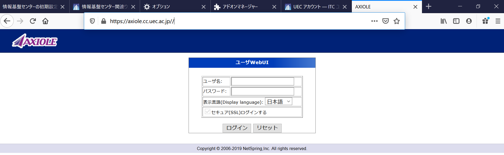
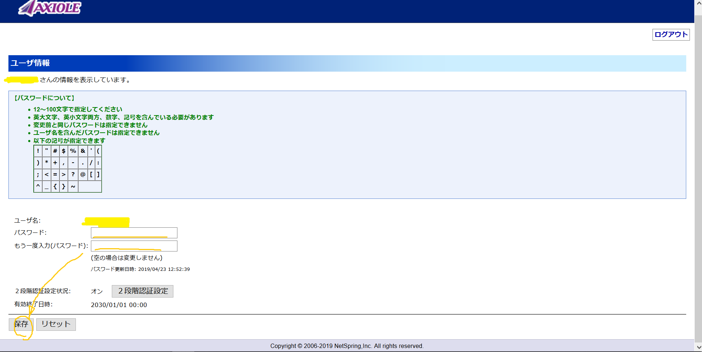

Lunatic電通生もっちゃんの部屋
STEP 3 UEC アカウントの初期パスワードを変更する
まず、先ほど設定したFirefoxで、パスワード変更画面（https://axiole.cc.uec.ac.jp//）にアクセスしてください。
この画面がでてきたら、自分のUECアカウントと初期パスワードを入力してください。その後、「ログイン」を押してください。
「パスワードについて」を参考にしながら、条件にあうようにパスワードを2回入力し、保存ボタンを押してください。
「保存しますか？」と聞かれるので「はい」を選択します。「成功」とでると変更が成功している証です。次回からは登録したパスワードを使用してください。
ここで、パスワードを変更したら、右上の「ログアウト」ボタンをおして、更にその画面を閉じ、Step2で開いたままのPowershellを閉じて、5から10分程待ってください。その後、STEP 2（前編）をもう一度行ってください。
Next -> STEP 4 2 要素認証を設定する